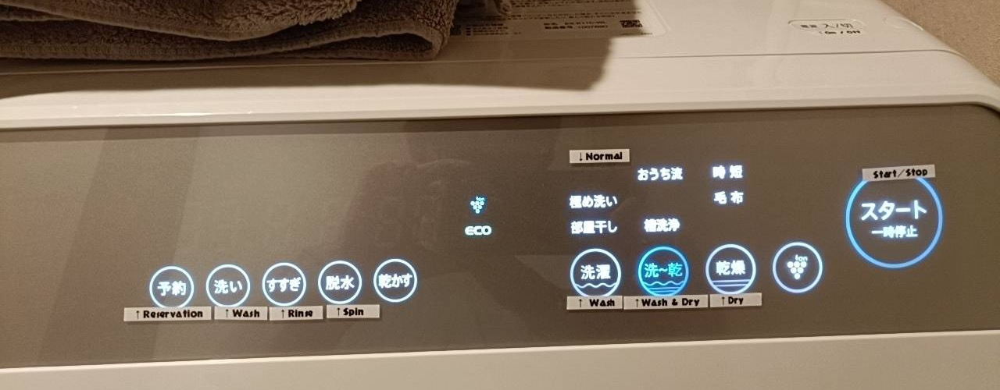
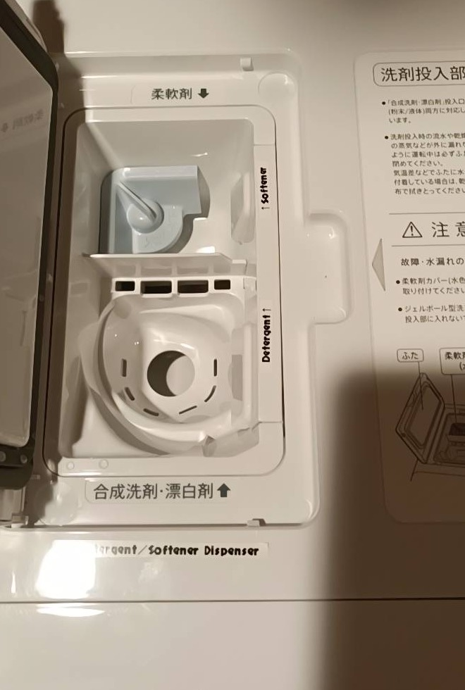

WASH WASH & DRY DRY START / STOPWashing Machine Panel
Use the large Start/Stop button on the right after choosing the mode.
スタート / 一時停止Start / pause
洗濯Wash
洗〜乾Wash and dry
乾燥Dry only
すすぎRinse
脱水Spin
予約Reservation timer

SOFTENER DETERGENTDetergent / Softener Dispenser
Put detergent and softener in the correct slots before starting the machine.
DetergentDetergent
SoftenerFabric softener
柔軟剤Softener slot
合成洗剤・漂白剤Detergent / bleach slot
Quick Steps
- Put clothes in the washer.
- Add detergent to the detergent slot and softener to the softener slot.
- Choose Wash, Wash & Dry, or Dry only.
- Press Start/Stop to begin.